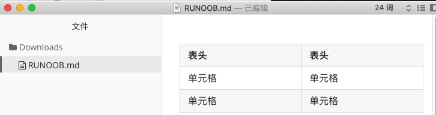
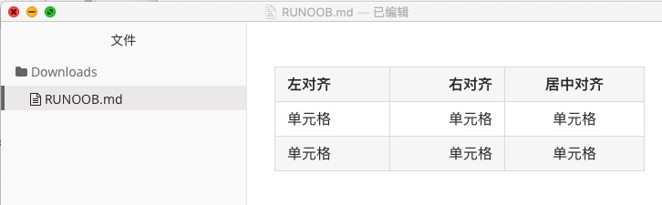
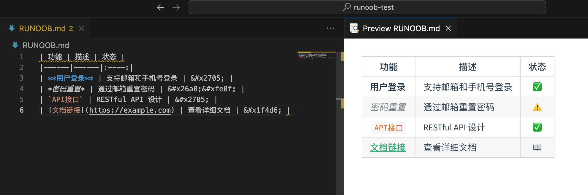
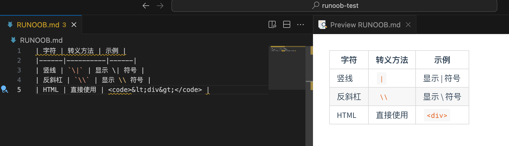
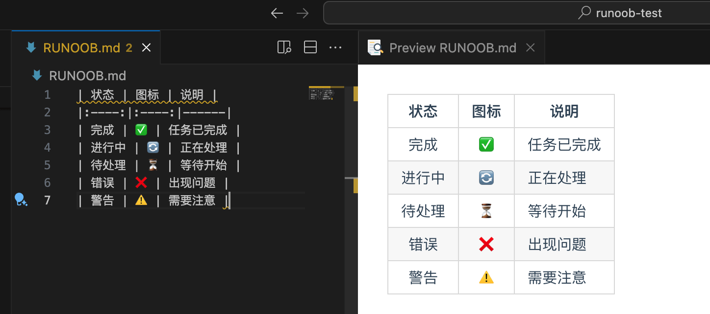
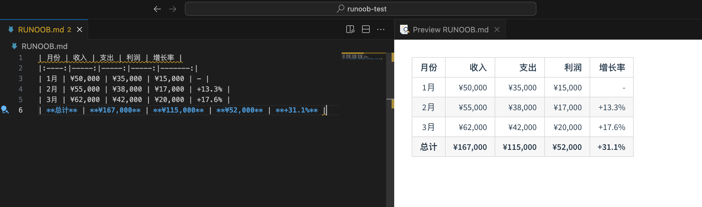
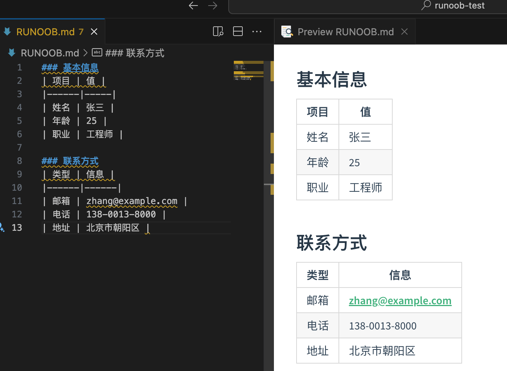

Markdown テーブル
テーブルと引用は、Markdownにおける重要なコンテンツ整理ツールです。
テーブルは構造化データを明確に表示でき、引用は重要な情報を強調したり、他人の意見を引用したりするために使用されます。
Markdownでテーブルを作成するには|を使用して異なるセルを区切り、-を使用してヘッダー行とその他の行を区切ります。
構文は以下の通りです：
| ヘッダー | ヘッダー | | ---- | ---- | | セル | セル | | セル | セル |
上記のコードの表示結果は以下の通りです：

構文の要点：
- ヘッダーとデータ行の間には区切り線が必要です
- 区切り線には少なくとも3つのハイフンが必要です
--- - 両端の縦線（パイプ記号）
|は省略可能ですが、可読性を高めるために残すことをお勧めします - 厳密に整列させる必要はありませんが、整列させるとより美しくなります
整列方式
テーブルの整列方式を設定できます：
- ---:内容とヘッダー行を右揃えに設定します。
- :---内容とヘッダー行を左揃えに設定します。
- :---:内容とヘッダー行を中央揃えに設定します。
例は以下の通りです：
| 左揃え | 右揃え | 中央揃え | | :-----| ----: | :----: | | セル | セル | セル | | セル | セル | セル |
上記のコードの表示結果は以下の通りです：

複雑なテーブルの処理テクニック
セル内容のフォーマット
テーブルのセル内では、ほとんどのMarkdown構文を使用できます：
| 功能 | 描述 | 状态 | |------|------|:----:| | **用户登录** | 支持邮箱和手机号登录 | ✅ | | *密码重置* | 通过邮箱重置密码 | ⚠️ | | `API接口` | RESTful API 设计 | ✅ | | [文档链接](https://example.com) | 查看详细文档 | 📖 |

長いテキストの処理
セルの内容が長い場合は、以下のテクニックを使用できます：
改行処理：
| 项目 | 详细说明 | |------|----------| | 需求分析 | 1. 收集用户需求<br>2. 分析业务场景<br>3. 确定功能范围 | | 技术选型 | 前端：React + TypeScript<br>后端：Node.js + Express<br>数据库：MongoDB |
省略形とリンク：
| 技术栈 | 说明 | 官网 | |--------|------|------| | React | 用户界面库 | [链接](https://reactjs.org) | | Vue.js | 渐进式框架 | [链接](https://vuejs.org) | | Angular | 完整的框架 | [链接](https://angular.io) |

テーブル内の特殊文字
一部の文字はテーブル内で特別な意味を持つため、エスケープが必要です：
| 字符 | 转义方法 | 示例 | |------|----------|------| | 竖线 | `\|` | 显示 \| 符号 | | 反斜杠 | `\\` | 显示 \\ 符号 | | HTML | 直接使用 | <code><div></code> |

テーブル装飾のアドバイス
Emojiや記号を使用する
| 状态 | 图标 | 说明 | |:----:|:----:|------| | 完成 | ✅ | 任务已完成 | | 进行中 | 🔄 | 正在处理 | | 待处理 | ⏳ | 等待开始 | | 错误 | ❌ | 出现问题 | | 警告 | ⚠️ | 需要注意 |

データテーブルのベストプラクティス
財務データテーブル：
| 月份 | 收入 | 支出 | 利润 | 增长率 | |:----:|-----:|-----:|-----:|-------:| | 1月 | ¥50,000 | ¥35,000 | ¥15,000 | - | | 2月 | ¥55,000 | ¥38,000 | ¥17,000 | +13.3% | | 3月 | ¥62,000 | ¥42,000 | ¥20,000 | +17.6% | | **总计** | **¥167,000** | **¥115,000** | **¥52,000** | **+31.1%** |

技術比較テーブル：
| 特性 | React | Vue.js | Angular | 评分 | |------|:-----:|:------:|:-------:|:----:| | 学习曲线 | 中等 | 简单 | 复杂 | Vue ⭐⭐⭐ | | 性能表现 | 优秀 | 优秀 | 良好 | 平分 ⭐⭐⭐ | | 生态系统 | 丰富 | 成长中 | 完整 | React ⭐⭐⭐ | | 企业支持 | Facebook | 社区 | Google | Angular ⭐⭐⭐ |

レスポンシブテーブルの処理
複雑なテーブルは、複数のシンプルなテーブルに分解することを検討できます。
モバイル端末に優しい設計：
### 基本信息 | 项目 | 值 | |------|-----| | 姓名 | 张三 | | 年龄 | 25 | | 职业 | 工程师 | ### 联系方式 | 类型 | 信息 | |------|------| | 邮箱 | zhang@example.com | | 电话 | 138-0013-8000 | | 地址 | 北京市朝阳区 |

その他の拡張